De Investigación (EXTRA). Propuesto por Juan Bosco Romero Márquez, profesor colaborador de la Universidad de Valladolid.
Problema 300
Dado el triángulo ABC, y las cevianas arbitrarias AA´, BB´y CC´, desde los vértices A, B y C, a los lados BC, AC y AB, respectivamente.
Sobre la ceviana AA´,(lo mismo para las demás), hacemos la siguiente construcción :
Desde A´, llevamos a su derecha e izquierda, la misma cantidad fija-pueden ser distintas, para B´, y C´-,para obtener sobre el lado BC, los puntos A'(B) y A'(C). Por A, trazamos la paralela a BC, y por A'(B) y A'(C) la paralela, a AA', respectivamente. De esta forma obtenemos el paralelogramo A'(C)A'(B)A*(B)A*(C), y los similares, para BB´y CC´, respectivamente. Definimos los siguientes puntos por los pares de rectas que contienen a los dos segmentos que se indican:
X(A) = BA*(C) intersección con AC, Y(A) = C A*(B) intersección AB, y, lo mismo X(B), Y(B), X(C), Y(C), para los otros dos vértices. Por último construimos las dos ternas de puntos
Q (A) = BA*(C) intersección CA*(B), P(B), y R(C), de forma análoga. Y, a terna de puntos,
U = X(A)Y(A) intersección con X(B)Y(B), V = X(A)Y (A) intersección con X(C)Y(C), W = X(B)Y(B) intersección con X(C)Y(C). Se pide:
a) Demostrar que los puntos Q(A), P(B) y R(C), están en las medianas correspondientes a los vértices, A´, B´y C´.
b) Hallar los lugares geométricos de los puntos Q(A), P(B) y R(C) cuando A', B', y C' recorren los lados BC, AC y AB.
C) Demostrar que el triángulo UVW es homotético al triángulo ABC. Calcular el centro y la razón de la homotecia.
Romero, J.B. (2005): Comunicación personal Solución de José María Pedret, Ingeniero Naval. Esplugues de Llobregat (Barcelona). (1 de marzo de 2006) |
|
DIBUJO DEL ENUNCIADO |
|
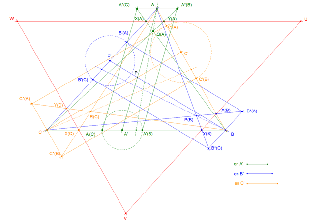 Toda construcción relacionada con el punto A se ha realizado en verde. Toda construcción relacionada con el punto B se ha realizado en azul. Toda construcción relacionada con el punto C se ha realizado en naranja. Las cantidades fijas aplicadas a cada lado son variables y en general distintas y vienen dadas por los segmentos (ver figura 1) en A' en B' en C'
|
|
APARTADO (a) |
|
LA CONSTRUCCIÓN DE Q(A)
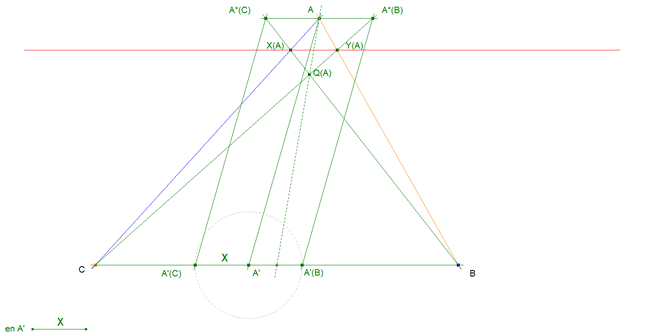
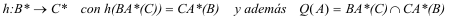 Que h es una homografía es fácil de ver, basta darnos cuenta que el trazar paralelas de A'(B) a A*(B) y de A'(C) a A*(C) define una proyección de la recta BC sobre su paralela por A. Es claro que el centro de esa proyección es el punto de infinito de AA'. Entonces como A'(C) y A'(B) son simétricos respecto a A' (por definición), A*(C) y A*(B) lo son respecto A y por lo tanto A*(B) y A*(C) son también homográficos y siendo B y C puntos fijos, las rectas que unen B con A*(C) y C con A*(B) son homográficas. Por el teorema de CHASLES-STEINER, el lugar geométrico de la intersección de rectas homólogas en dos haces homográficos es, en general, una cónica. Pero en este caso la cónica es degenerada y se reduce a una recta. Para que las rectas homólogas de una homografía de haces se corten en una recta, la homografía debe ser una proyección de haces. Recordemos el siguiente teorema para puntos homólogos en una homografía entre dos rectas:
Si, en una homografía de dos rectas, su punto de intersección es homólogo de sí mismo, la homografía es una proyección de una recta sobre la otra. Por tanto, las rectas que unen puntos homólogos concurren en un punto (Centro de proyección). El dual de este teorema será:
Si, en una homografía de dos haces, la recta común (que une los centros de los haces) es homóloga de sí misma, la homografía es una proyección de haces. Por tanto, los puntos de intersección de las rectas homólogas están sobre una misma recta (Recta de proyección).
LA HOMOGRAFÍA DEFINIDA TIENE LA RECTA COMÚN BC HOMÓLOGA DE SÍ MISMA.
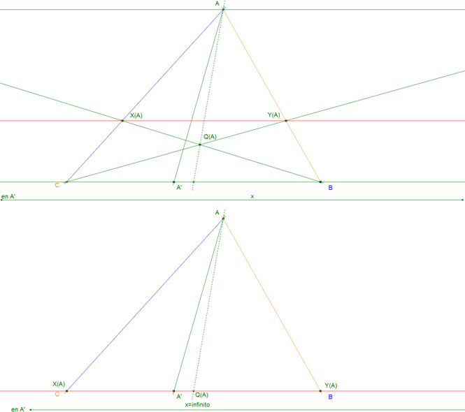
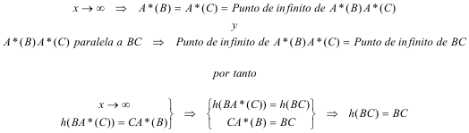 Por lo que BC es homóloga de sí misma que es lo que queríamos demostrar; y entonces ya sabemos que:
El lugar geométrico de Q(A) es una recta.
LA RECTA LUGAR DE Q(A) PASA POR A
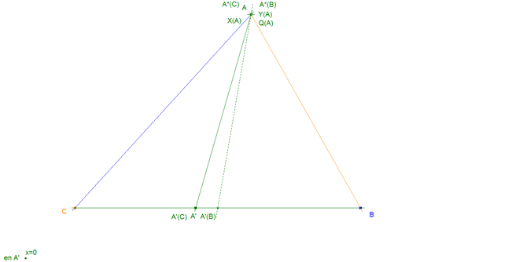
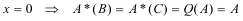
LA RECTA LUGAR DE Q(A) ES LA MEDIANA POR A 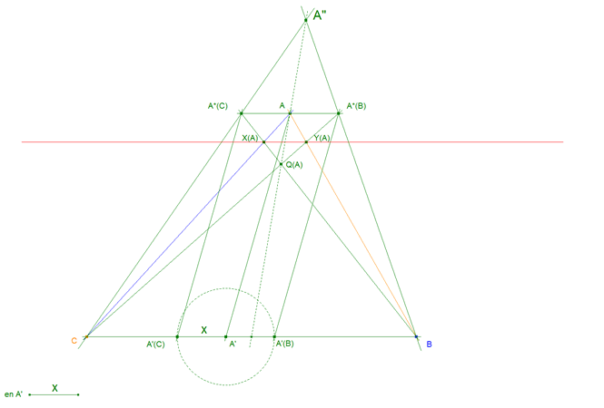 figura 5
Consideremos ahora, el triángulo de vértices A"BC.
Y un punto A sobre la mediana por A".
Trazamos la recta r paralela a BC por A y obtenemos
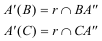 Acabamos de definir la siguiente homografía
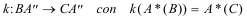
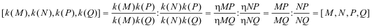 Por lo tanto si definimos
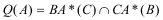 Es la misma homografía h entre haces que hemos definido en la CONSTRUCCIÓN DE Q(A) . Allí probamos que el lugar de Q(A) es una recta por A. Del mismo modo, en este triángulo, la recta pasa por A". Por lo tanto el lugar de Q(A) es la recta AA"; pero A está sobre la mediana por A" , entonces AA" pasa por el punto medio de BC por lo que podemos concluir
El lugar de Q(A) es la mediana por A y análogamente
El lugar de P(B) es la mediana por B
El lugar de R(C) es la mediana por C
|
|
APARTADO (b) |
|
Hemos probado en (a) que el lugar geométrico de Q(A) al variar x (la cantidad fija a derecha e izquierda de A') es la mediana por A. Es decir Q(A) depende de la cantidad fija; pero no de la ceviana. Entonces si variamos A' sobre BC sin variar x, Q(A) permanece inmóvil sobre la mediana y por tanto
El lugar de Q(A) al variar sólo A' sobre BC es un punto fijo y análogamente
El lugar de P(B) al variar sólo B' sobre CA es un punto fijo
El lugar de R(C) al variar sólo C' sobre AB es un punto fijo
|
|
APARTADO (c) |
|
LOS TRIÁNGULOS ABC Y UVW SON HOMÓLOGOS
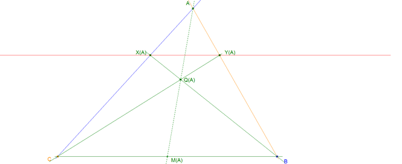
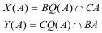
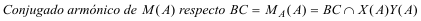 Pero
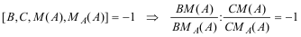 Peo M(A) es el punto medio de BC
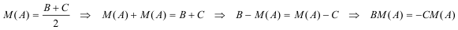
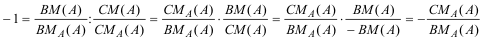 y de aquí
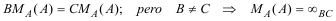
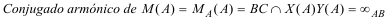 Por lo que X(A)Y(A) y BC se cortan en el punto de infinito de BC por lo que
X(A)Y(A) es paralela a BC ⇒ WU es paralela a BC y análogamente
X(B)Y(B) es paralela a CA ⇒ UV es paralela a CA
X(C)Y(C) es paralela a AB ⇒ VW es paralela a AB y de aquí deducimos que
Los triángulos ABC y UVW son homotéticos por tener todos sus lados paralelos.
ELECCIÓN DE UN SISTEMA DE COORDENADAS
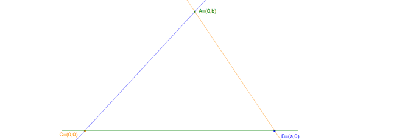
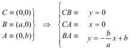
DETERMINACIÓN DE LAS ECUACIONES DE LAS RECTAS WU, UV y VW Hemos establecido en (a) y (b) que las posiciones de Q(A), P(B), R(C) no dependen de las cevianas, sólo dependen de las cantidades a añadir a A', B' y C'. Por ello vamos a elegir un sistema conveniente de cevianas, las medianas del triángulo ABC.
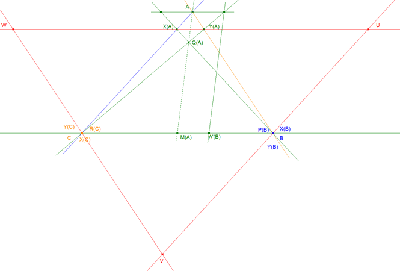
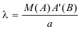
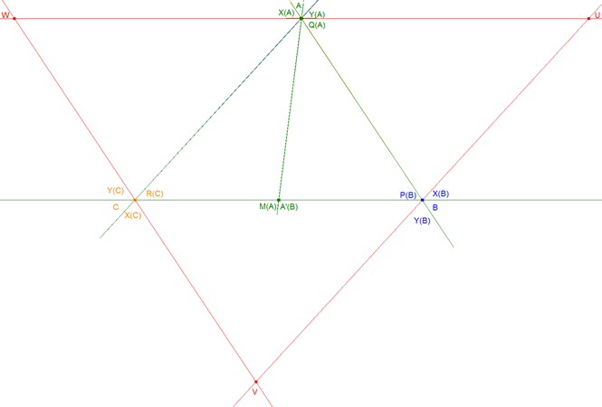
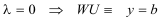
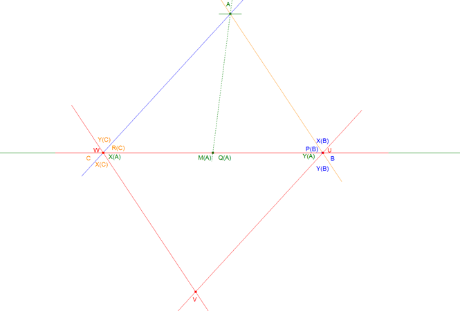
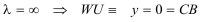
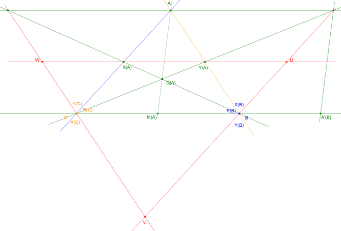
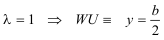
podemos pues deducir que
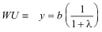
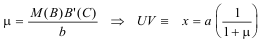 y si definimos
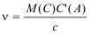
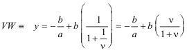
DETERMINACIÓN E U
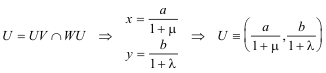
DETERMINACIÓN DE W
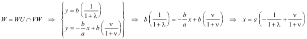 DETERMINACIÓN DE LA LONGITUD WU
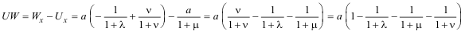
DETERMINACIÓN DE LA RAZÓN DE HOMOTECIA
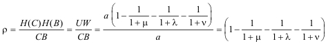
DETERMINACIÓN DEL CENTRO DE HOMOTECIA
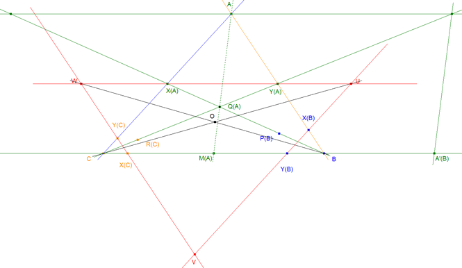
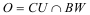 Manteniendo el mismo sistema de coordenadas
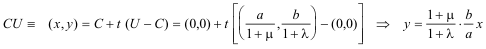
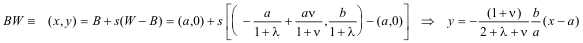 Y para determinar O*
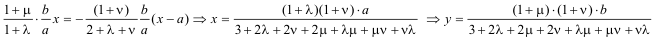
* Diversas pruebas sobre CABR II han confirmado repetidamente este resultado. |